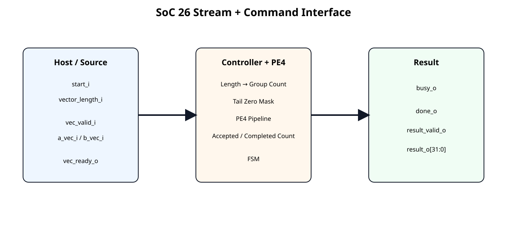
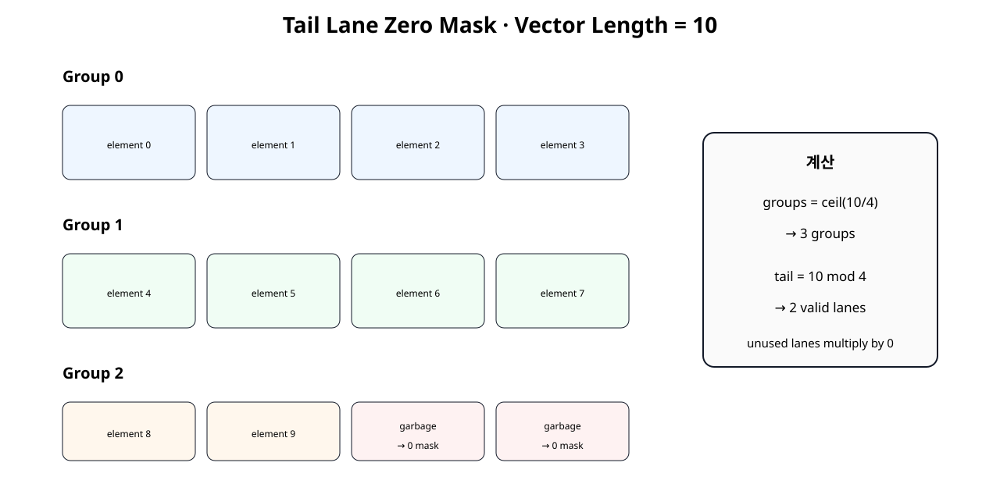
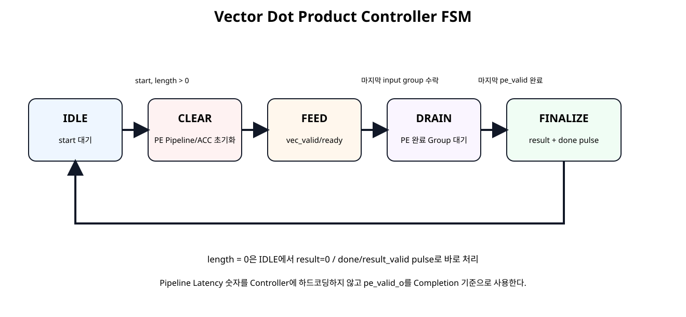
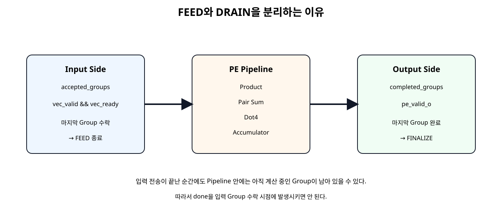

전체 학습 위치
이번 장의 목표

원본 보기 ↗
Datapath에서 연산기로
SoC 25 PE4는 valid_i가 들어오면 4개 Lane을 계산하는 Datapath였다. SoC 26은 “Vector 길이가 몇 개인가?”, “몇 Group을 받아야 하는가?”, “마지막 Lane은 몇 개가 유효한가?”, “언제 계산이 진짜 끝났는가?”를 Controller가 관리한다.
Controller Interface
| 방향 | Signal | 역할 |
|---|---|---|
| 입력 | start_i | 새 Vector 연산 시작 |
| 입력 | vector_length_i | Scalar Element 개수 |
| 입력 | vec_valid_i | 4-Lane Group 유효 |
| 출력 | vec_ready_o | 현재 Group 수락 가능 |
| 출력 | busy_o | 연산 진행 중 |
| 출력 | done_o | 연산 완료 Pulse |
| 출력 | result_valid_o | 최종 결과 유효 Pulse |
| 출력 | result_o | 32-bit 누산 결과 |
start / busy / done
Vector Length
vector_length_i는 4-Lane Group 수가 아니라 실제 Scalar Element 수다. 예를 들어 길이 10은 10개의 a[i]×b[i]를 의미한다.
Group Count
Hardware 정수 연산에서는 다음처럼 계산한다.
groups = (vector_length + 3) >> 2;| Length | Group |
|---|---|
| 1~4 | 1 |
| 5~8 | 2 |
| 9~12 | 3 |
| 16 | 4 |
| 17 | 5 |
17-bit 중간 계산
vector_length_i가 16-bit이면 최대 65535다. 65535 + 3은 16-bit를 넘을 수 있으므로 먼저 17-bit로 확장한 뒤 Shift한다.
length_plus3_w =
{1'b0, vector_length_i} + 17'd3;
groups_from_length_w =
length_plus3_w[16:2];Tail Lane 수
| Length mod 4 | 마지막 Group 유효 Lane |
|---|---|
| 1 | 1개 |
| 2 | 2개 |
| 3 | 3개 |
| 0 | 4개 |
Tail Zero Mask

원본 보기 ↗
A와 B 양쪽을 모두 0으로 Mask하므로 해당 Lane의 Product는 0이 된다.
길이 10 예제
Board Demo에서는 raw A를 1~10, raw B를 1로 두어 최종 Raw Result가 55가 된다. LED 하위 16-bit 예상값은 0x0037이다.
FSM 전체 구조

원본 보기 ↗
IDLE
start_i를 기다린다. Length가 0이면 결과 0을 즉시 반환하고, 0보다 크면 Group 수와 Tail Lane 수를 저장한 뒤 CLEAR로 이동한다.
CLEAR
PE4 내부 Product/Adder Pipeline과 Accumulator를 한 Clock 상태 동안 Clear한다. Start와 첫 Vector 입력을 같은 Clock에 처리하지 않아 첫 Group이 Clear에 의해 사라지는 문제를 방지한다.
FEED
vec_ready_o=1로 Source Group을 수락한다. 실제 Group 수락 기준은 다음 하나뿐이다.
마지막 Group이 수락되면 더 이상 입력을 받지 않고 DRAIN으로 이동한다.
DRAIN

원본 보기 ↗
PE4 Pipeline에 남아 있는 Group의 pe_valid_o가 모두 나올 때까지 기다린다.
FINALIZE
마지막 PE Completion 이후 최종 Accumulator를 result_o에 Capture하고 done_o, result_valid_o를 한 Clock Pulse로 발생시킨다.
Accepted Group Count
accepted_groups_o는 Input Handshake가 실제 발생할 때만 증가한다.
if (vec_valid_i && vec_ready_o)
accepted_groups_o <=
accepted_groups_o + 1;Completed Group Count
completed_groups_o는 PE4의 실제 pe_valid_o를 기준으로 증가한다.
Completed Count → Datapath Output Side 진행도
왜 Pipeline Latency를 하드코딩하지 않는가
Controller가 “PE는 정확히 4 Clock 뒤에 끝난다”는 숫자에 의존하면 PE Pipeline Stage를 변경할 때 Controller도 수정해야 한다.
따라서 이후 Timing 개선으로 PE 내부 Stage 수가 바뀌어도 Interface Protocol을 유지하기 쉽다.
READY / VALID 입력
Source는 vec_valid_i로 현재 Group이 유효함을 알리고 Controller는 vec_ready_o로 FEED 상태임을 알린다. 둘이 동시에 1인 Rising Edge에서만 Group이 소비된다.
Source Gap 허용
Vector Group은 반드시 연속 Clock으로 들어올 필요가 없다. Testbench는 홀수 Group 전에 일부러 vec_valid_i=0 Gap을 넣어 Controller가 Input Stall을 정상적으로 처리하는지 확인한다.
Zero Length 정책
길이 0의 의미를 애매하게 두지 않고 명시적으로 정의했다.
Controller RTL
module vector_dot_controller_pe4 (
input wire clk,
input wire resetn,
input wire start_i,
input wire [15:0] vector_length_i,
input wire vec_valid_i,
output wire vec_ready_o,
input wire [31:0] a_vec_i,
input wire [31:0] b_vec_i,
output wire busy_o,
output reg done_o,
output reg result_valid_o,
output reg signed [31:0] result_o,
output reg [15:0] accepted_groups_o,
output reg [15:0] completed_groups_o
);
// Controller policy:
// - 4 signed 8-bit lanes per accepted input group
// - vector_length_i is the number of scalar elements, not the number of groups
// - ceil(vector_length / 4) groups are consumed
// - unused tail lanes are forced to zero
// - the PE pipeline latency is NOT hard-coded
// - completion is counted from pe_valid_o
//
// State flow:
// IDLE -> CLEAR -> FEED -> DRAIN -> FINALIZE -> IDLE
localparam [2:0] ST_IDLE = 3'd0;
localparam [2:0] ST_CLEAR = 3'd1;
localparam [2:0] ST_FEED = 3'd2;
localparam [2:0] ST_DRAIN = 3'd3;
localparam [2:0] ST_FINALIZE = 3'd4;
reg [2:0] state_q;
reg [15:0] total_groups_q;
reg [2:0] tail_lanes_q;
wire [16:0] length_plus3_w;
wire [15:0] groups_from_length_w;
assign length_plus3_w =
{1'b0, vector_length_i} + 17'd3;
assign groups_from_length_w =
length_plus3_w[16:2];
// Remainder 0 means the final group uses all four lanes.
wire [2:0] tail_from_length_w;
assign tail_from_length_w =
(vector_length_i[1:0] == 2'd0)
? 3'd4
: {1'b0, vector_length_i[1:0]};
assign busy_o =
(state_q != ST_IDLE);
assign vec_ready_o =
(state_q == ST_FEED);
// The current FEED transfer is the final input group when the accepted
// group counter points to total_groups_q - 1.
wire current_group_is_last_w;
assign current_group_is_last_w =
(state_q == ST_FEED) &&
(total_groups_q != 16'd0) &&
(accepted_groups_o == (total_groups_q - 16'd1));
function [31:0] mask_tail_lanes;
input [31:0] vec;
input [2:0] valid_lanes;
begin
case (valid_lanes)
3'd1: mask_tail_lanes = {
24'h000000,
vec[7:0]
};
3'd2: mask_tail_lanes = {
16'h0000,
vec[15:0]
};
3'd3: mask_tail_lanes = {
8'h00,
vec[23:0]
};
default: mask_tail_lanes = vec;
endcase
end
endfunction
wire [31:0] masked_a_vec_w;
wire [31:0] masked_b_vec_w;
assign masked_a_vec_w =
current_group_is_last_w
? mask_tail_lanes(a_vec_i, tail_lanes_q)
: a_vec_i;
assign masked_b_vec_w =
current_group_is_last_w
? mask_tail_lanes(b_vec_i, tail_lanes_q)
: b_vec_i;
wire pe_valid_i;
wire pe_clear_i;
assign pe_valid_i =
vec_valid_i &&
vec_ready_o;
assign pe_clear_i =
(state_q == ST_CLEAR);
wire signed [31:0] pe_acc_w;
wire pe_valid_o;
pe4_dot_accum_pipelined u_pe4 (
.clk(clk),
.resetn(resetn),
.clear_i(pe_clear_i),
.valid_i(pe_valid_i),
.a_vec_i(masked_a_vec_w),
.b_vec_i(masked_b_vec_w),
.acc_o(pe_acc_w),
.valid_o(pe_valid_o)
);
always @(posedge clk) begin
if (!resetn) begin
state_q <= ST_IDLE;
total_groups_q <= 16'd0;
tail_lanes_q <= 3'd4;
done_o <= 1'b0;
result_valid_o <= 1'b0;
result_o <= 32'sd0;
accepted_groups_o <= 16'd0;
completed_groups_o <= 16'd0;
end else begin
// One-cycle output pulses by default.
done_o <= 1'b0;
result_valid_o <= 1'b0;
// Count actual PE completions independently of input feeding.
if (
pe_valid_o &&
((state_q == ST_FEED) || (state_q == ST_DRAIN))
) begin
completed_groups_o <=
completed_groups_o + 16'd1;
end
case (state_q)
ST_IDLE: begin
if (start_i) begin
result_o <= 32'sd0;
accepted_groups_o <= 16'd0;
completed_groups_o <= 16'd0;
if (vector_length_i == 16'd0) begin
// Defined zero-length behavior:
// result = 0, immediate one-cycle completion pulse.
total_groups_q <= 16'd0;
tail_lanes_q <= 3'd4;
result_o <= 32'sd0;
done_o <= 1'b1;
result_valid_o <= 1'b1;
end else begin
total_groups_q <= groups_from_length_w;
tail_lanes_q <= tail_from_length_w;
state_q <= ST_CLEAR;
end
end
end
ST_CLEAR: begin
// pe_clear_i is asserted for this full clock state.
// Move to FEED only after the PE has observed the clear.
state_q <= ST_FEED;
end
ST_FEED: begin
if (pe_valid_i) begin
accepted_groups_o <=
accepted_groups_o + 16'd1;
if (current_group_is_last_w) begin
state_q <= ST_DRAIN;
end
end
end
ST_DRAIN: begin
// Count the final registered PE completion first.
// FINALIZE isolates the final result capture and done pulse
// from the pipeline-drain bookkeeping, without hard-coding
// the PE latency.
if (
pe_valid_o &&
(completed_groups_o == (total_groups_q - 16'd1))
) begin
state_q <= ST_FINALIZE;
end
end
ST_FINALIZE: begin
result_o <= pe_acc_w;
done_o <= 1'b1;
result_valid_o <= 1'b1;
state_q <= ST_IDLE;
end
default: begin
state_q <= ST_IDLE;
end
endcase
end
end
endmodule
Basys3 Demo Source
module vector_demo_source_len10 (
input wire clk,
input wire resetn,
output reg start_o,
output wire [15:0] vector_length_o,
output reg vec_valid_o,
input wire vec_ready_i,
output reg [31:0] a_vec_o,
output reg [31:0] b_vec_o,
input wire done_i
);
// One-shot demonstration:
// vector length = 10 scalar elements
// group count = ceil(10 / 4) = 3
//
// The final group intentionally places non-zero garbage in lanes 2/3.
// The controller must zero-mask those two tail lanes.
localparam [2:0] S_START = 3'd0;
localparam [2:0] S_WAIT = 3'd1;
localparam [2:0] S_SEND0 = 3'd2;
localparam [2:0] S_SEND1 = 3'd3;
localparam [2:0] S_SEND2 = 3'd4;
localparam [2:0] S_DONE = 3'd5;
reg [2:0] state_q;
assign vector_length_o = 16'd10;
always @(*) begin
start_o = 1'b0;
vec_valid_o = 1'b0;
a_vec_o = 32'h0000_0000;
b_vec_o = 32'h0000_0000;
case (state_q)
S_START: begin
start_o = 1'b1;
end
S_SEND0: begin
vec_valid_o = 1'b1;
// Lane order in each 32-bit word:
// {lane3, lane2, lane1, lane0}
a_vec_o = {
8'd4,
8'd3,
8'd2,
8'd1
};
b_vec_o = {
8'd1,
8'd1,
8'd1,
8'd1
};
end
S_SEND1: begin
vec_valid_o = 1'b1;
a_vec_o = {
8'd8,
8'd7,
8'd6,
8'd5
};
b_vec_o = {
8'd1,
8'd1,
8'd1,
8'd1
};
end
S_SEND2: begin
vec_valid_o = 1'b1;
// Only lane0/lane1 belong to vector length 10.
// lane2/lane3 are intentional garbage.
a_vec_o = {
8'h7F,
8'h7F,
8'd10,
8'd9
};
b_vec_o = {
8'h7F,
8'h7F,
8'd1,
8'd1
};
end
default: begin
end
endcase
end
always @(posedge clk) begin
if (!resetn) begin
state_q <= S_START;
end else begin
case (state_q)
S_START: begin
state_q <= S_WAIT;
end
S_WAIT: begin
if (vec_ready_i) begin
state_q <= S_SEND0;
end
end
S_SEND0: begin
if (vec_ready_i) begin
state_q <= S_SEND1;
end
end
S_SEND1: begin
if (vec_ready_i) begin
state_q <= S_SEND2;
end
end
S_SEND2: begin
if (vec_ready_i) begin
state_q <= S_DONE;
end
end
S_DONE: begin
// Hold until controller reports completion.
if (done_i) begin
state_q <= S_DONE;
end
end
default: begin
state_q <= S_START;
end
endcase
end
end
endmodule
Length 10의 마지막 Group에 일부러 Garbage Lane을 넣어 Zero Mask가 없으면 LED 결과가 55가 되지 않도록 구성했다.
Board Top
module vector_dot_controller_basys3_top (
input wire clk,
input wire btnC,
output wire [15:0] led_o
);
// Pure board Shell / Wrapper.
wire resetn;
wire start;
wire [15:0] vector_length;
wire vec_valid;
wire vec_ready;
wire [31:0] a_vec;
wire [31:0] b_vec;
wire busy;
wire done;
wire result_valid;
wire signed [31:0] result;
wire [15:0] accepted_groups;
wire [15:0] completed_groups;
reset_active_high_to_active_low u_reset_adapter (
.reset_i(btnC),
.resetn_o(resetn)
);
vector_demo_source_len10 u_demo_source (
.clk(clk),
.resetn(resetn),
.start_o(start),
.vector_length_o(vector_length),
.vec_valid_o(vec_valid),
.vec_ready_i(vec_ready),
.a_vec_o(a_vec),
.b_vec_o(b_vec),
.done_i(done)
);
vector_dot_controller_pe4 u_controller (
.clk(clk),
.resetn(resetn),
.start_i(start),
.vector_length_i(vector_length),
.vec_valid_i(vec_valid),
.vec_ready_o(vec_ready),
.a_vec_i(a_vec),
.b_vec_i(b_vec),
.busy_o(busy),
.done_o(done),
.result_valid_o(result_valid),
.result_o(result),
.accepted_groups_o(accepted_groups),
.completed_groups_o(completed_groups)
);
vector_result_sink u_result_sink (
.clk(clk),
.resetn(resetn),
.result_i(result),
.result_valid_i(result_valid),
.led_o(led_o)
);
endmodule
Top은 Reset Adapter, Demo Source, Controller, Result Sink 연결만 수행한다.
Self-Checking Testbench
`timescale 1ns / 1ps
module tb_vector_dot_controller_pe4;
logic clk = 1'b0;
logic resetn = 1'b0;
logic start_i = 1'b0;
logic [15:0] vector_length_i = 16'd0;
logic vec_valid_i = 1'b0;
wire vec_ready_o;
logic [31:0] a_vec_i = 32'h0;
logic [31:0] b_vec_i = 32'h0;
wire busy_o;
wire done_o;
wire result_valid_o;
wire signed [31:0] result_o;
wire [15:0] accepted_groups_o;
wire [15:0] completed_groups_o;
int error_count = 0;
int check_count = 0;
always #5 clk = ~clk;
vector_dot_controller_pe4 dut (
.clk(clk),
.resetn(resetn),
.start_i(start_i),
.vector_length_i(vector_length_i),
.vec_valid_i(vec_valid_i),
.vec_ready_o(vec_ready_o),
.a_vec_i(a_vec_i),
.b_vec_i(b_vec_i),
.busy_o(busy_o),
.done_o(done_o),
.result_valid_o(result_valid_o),
.result_o(result_o),
.accepted_groups_o(accepted_groups_o),
.completed_groups_o(completed_groups_o)
);
function automatic integer ceil_div4(
input integer n
);
ceil_div4 = (n + 3) / 4;
endfunction
function automatic integer signed gen_a(
input integer scalar_index
);
integer temp;
begin
// Deterministic signed 8-bit pattern.
temp = ((scalar_index * 29) + 17) & 8'hFF;
if (temp >= 128) begin
temp = temp - 256;
end
gen_a = temp;
end
endfunction
function automatic integer signed gen_b(
input integer scalar_index
);
integer temp;
begin
temp = ((scalar_index * 47) + 91) & 8'hFF;
if (temp >= 128) begin
temp = temp - 256;
end
gen_b = temp;
end
endfunction
function automatic [31:0] pack4(
input integer x0,
input integer x1,
input integer x2,
input integer x3
);
begin
pack4 = {
x3[7:0],
x2[7:0],
x1[7:0],
x0[7:0]
};
end
endfunction
task automatic check_true(
input string name,
input bit condition
);
begin
check_count++;
if (!condition) begin
error_count++;
$error("CHECK FAIL: %s", name);
end else begin
$display("CHECK PASS: %s", name);
end
end
endtask
task automatic check_eq32(
input string name,
input logic signed [31:0] actual,
input logic signed [31:0] expected
);
begin
check_count++;
if (actual !== expected) begin
error_count++;
$error(
"CHECK FAIL: %s actual=%0d expected=%0d",
name,
actual,
expected
);
end else begin
$display(
"CHECK PASS: %s = %0d",
name,
actual
);
end
end
endtask
task automatic pulse_start(
input integer length
);
begin
@(negedge clk);
vector_length_i = length[15:0];
start_i = 1'b1;
@(negedge clk);
start_i = 1'b0;
end
endtask
task automatic drive_group(
input integer group_index,
input integer length,
inout integer signed expected_acc
);
integer lane;
integer scalar_index;
integer signed a0;
integer signed a1;
integer signed a2;
integer signed a3;
integer signed b0;
integer signed b1;
integer signed b2;
integer signed b3;
integer signed lane_a;
integer signed lane_b;
begin
// Deliberately insert a one-cycle source gap before odd groups.
if ((group_index & 1) != 0) begin
@(negedge clk);
vec_valid_i = 1'b0;
a_vec_i = 32'h0;
b_vec_i = 32'h0;
end
while (vec_ready_o !== 1'b1) begin
@(negedge clk);
end
a0 = 127;
a1 = 127;
a2 = 127;
a3 = 127;
b0 = -128;
b1 = -128;
b2 = -128;
b3 = -128;
// Values beyond vector_length are intentional garbage.
// The DUT tail-mask must remove them.
for (lane = 0; lane < 4; lane++) begin
scalar_index = (group_index * 4) + lane;
if (scalar_index < length) begin
lane_a = gen_a(scalar_index);
lane_b = gen_b(scalar_index);
expected_acc =
expected_acc +
(lane_a * lane_b);
case (lane)
0: begin a0 = lane_a; b0 = lane_b; end
1: begin a1 = lane_a; b1 = lane_b; end
2: begin a2 = lane_a; b2 = lane_b; end
3: begin a3 = lane_a; b3 = lane_b; end
endcase
end
end
@(negedge clk);
while (vec_ready_o !== 1'b1) begin
@(negedge clk);
end
a_vec_i = pack4(a0, a1, a2, a3);
b_vec_i = pack4(b0, b1, b2, b3);
vec_valid_i = 1'b1;
// READY is checked before the sampling edge because the DUT may
// deassert READY immediately after the final group is accepted.
check_true(
"group presented only when ready",
vec_ready_o === 1'b1
);
// Handshake occurs on the next rising edge.
@(posedge clk);
#1;
@(negedge clk);
vec_valid_i = 1'b0;
end
endtask
task automatic run_case(
input integer length
);
integer group_count;
integer group_index;
integer signed expected_acc;
integer timeout;
begin
expected_acc = 0;
group_count = ceil_div4(length);
$display("");
$display(
"RUN length=%0d groups=%0d",
length,
group_count
);
pulse_start(length);
if (length == 0) begin
timeout = 0;
while (
(result_valid_o !== 1'b1) &&
(timeout < 20)
) begin
@(posedge clk);
#1;
timeout++;
end
check_true(
"zero-length result_valid",
result_valid_o === 1'b1
);
check_true(
"zero-length done",
done_o === 1'b1
);
check_eq32(
"zero-length result",
result_o,
32'sd0
);
check_true(
"zero-length busy low",
busy_o === 1'b0
);
@(posedge clk);
#1;
return;
end
// Wait for CLEAR state to finish and FEED to begin.
while (vec_ready_o !== 1'b1) begin
@(posedge clk);
#1;
end
check_true(
"busy asserted during operation",
busy_o === 1'b1
);
for (
group_index = 0;
group_index < group_count;
group_index++
) begin
drive_group(
group_index,
length,
expected_acc
);
end
// Tail garbage has been sent for partial final groups.
// Now wait for the PE pipeline to drain.
timeout = 0;
while (
(result_valid_o !== 1'b1) &&
(timeout < 100)
) begin
@(posedge clk);
#1;
timeout++;
end
check_true(
"result_valid after pipeline drain",
result_valid_o === 1'b1
);
check_true(
"done with result_valid",
done_o === 1'b1
);
check_true(
"busy low when done pulses",
busy_o === 1'b0
);
check_eq32(
"vector dot result",
result_o,
expected_acc
);
check_true(
"accepted group count",
accepted_groups_o == group_count
);
check_true(
"completed group count",
completed_groups_o == group_count
);
@(posedge clk);
#1;
check_true(
"result_valid is one-cycle pulse",
result_valid_o === 1'b0
);
end
endtask
initial begin
repeat (5) @(posedge clk);
resetn = 1'b1;
// Zero length is explicitly defined as immediate result 0.
run_case(0);
// Every tail size: 1, 2, 3, and full 4 lanes.
run_case(1);
run_case(2);
run_case(3);
run_case(4);
// Multiple groups + tail cases.
run_case(5);
run_case(10);
run_case(16);
run_case(17);
run_case(31);
$display("");
$display("SOC26 CHECK COUNT : %0d", check_count);
$display("SOC26 ERROR COUNT : %0d", error_count);
if (error_count == 0) begin
$display("SOC26 VECTOR CONTROLLER TEST: PASS");
end else begin
$fatal(
1,
"SOC26 VECTOR CONTROLLER TEST: FAIL (%0d errors)",
error_count
);
end
#20;
$finish;
end
endmodule
Tail Garbage Test
길이 1,2,3처럼 일부 Lane만 유효한 마지막 Group의 나머지 Lane에는 127과 -128 같은 큰 값을 넣는다. Reference Model은 Vector Length 안의 Scalar만 더하므로 Mask가 빠지면 즉시 Result Mismatch가 발생한다.
Python Reference
length,groups,tail,result_raw,last_group_masked_a
0,0,0,0,[]
1,1,1,1547,[17, 0, 0, 0]
2,1,2,-3881,[17, 46, 0, 0]
3,1,3,-9206,[17, 46, 75, 0]
4,1,4,-11702,[17, 46, 75, 104]
5,2,1,-14531,[-123, 0, 0, 0]
10,3,2,-25045,[-7, 22, 0, 0]
16,4,4,-19384,[109, -118, -89, -60]
17,5,1,-21709,[-31, 0, 0, 0]
31,8,3,-19552,[61, 90, 119, 0]
demo length 10 -> 3 groups, tail lanes = 2
demo expected raw result = 55 (LED lower 16 bits = 0x0037)
SOC26 PYTHON CONTROLLER REFERENCE: PASS
Spreadsheet runtime warmup failed during python startup
Traceback (most recent call last):
File "/tmp/tmp.L2TH2Y5coc/artifact_tool_v2-2.8.22/artifact_tool/patches/warm_spreadsheet_runtime_on_startup.py", line 26, in warm_spreadsheet_runtime_on_startup
File "/tmp/tmp.L2TH2Y5coc/artifact_tool_v2-2.8.22/artifact_tool/spreadsheet_warmup.py", line 785, in warm_spreadsheet_runtime
File "/tmp/tmp.L2TH2Y5coc/artifact_tool_v2-2.8.22/artifact_tool/spreadsheet_warmup.py", line 720, in _warm_feature_flows
File "/tmp/tmp.L2TH2Y5coc/artifact_tool_v2-2.8.22/artifact_tool/spreadsheet_warmup.py", line 704, in _warm_collaboration_flows
File "/tmp/tmp.L2TH2Y5coc/artifact_tool_v2-2.8.22/artifact_tool/generated/interface/models.py", line 32317, in hydrate_crdt_from_proto
File "/tmp/tmp.L2TH2Y5coc/artifact_tool_v2-2.8.22/artifact_tool/rpc/remote.py", line 749, in __call__
File "/tmp/tmp.L2TH2Y5coc/artifact_tool_v2-2.8.22/artifact_tool/rpc/client.py", line 150, in call
artifact_tool.rpc.client.RemoteError: hydrateCrdtFromProto requires an empty collaborative document.
Length 0/1/2/3/4/5/10/16/17/31에 대해 Group 수와 Tail Lane 수를 실제 실행으로 확인했다.
Vivado Simulation
vivado -mode batch \
-source scripts/prepare_soc26_simulation.tcl생성된 Project에서 tb_vector_dot_controller_pe4를 Run All하면 자동 PASS/FAIL Testbench를 실행할 수 있다.
Vivado Implementation
# SoC 26 · Vector Dot Product Controller analysis
#
# vivado -mode batch -source scripts/run_vector_controller_analysis.tcl
set script_dir [file dirname [file normalize [info script]]]
set root_dir [file normalize [file join $script_dir ".."]]
set rtl_dir [file join $root_dir "rtl"]
set xdc_dir [file join $root_dir "constraints"]
set out_dir [file normalize [file join $root_dir "reports"]]
file mkdir $out_dir
create_project -in_memory -part xc7a35tcpg236-1
read_verilog [file join $rtl_dir "reset_active_high_to_active_low.v"]
read_verilog [file join $rtl_dir "mul_s8_dsp.v"]
read_verilog [file join $rtl_dir "pe4_dot_accum_pipelined.v"]
read_verilog [file join $rtl_dir "vector_dot_controller_pe4.v"]
read_verilog [file join $rtl_dir "vector_demo_source_len10.v"]
read_verilog [file join $rtl_dir "vector_result_sink.v"]
read_verilog [file join $rtl_dir "vector_dot_controller_basys3_top.v"]
synth_design \
-top vector_dot_controller_basys3_top \
-part xc7a35tcpg236-1
read_xdc [file join $xdc_dir "basys3_vector_controller_lab.xdc"]
create_clock \
-name sys_clk \
-period 10.000 \
[get_ports clk]
report_utilization \
-hierarchical \
-file [file join $out_dir "01_utilization_post_synth.rpt"]
redirect -file [file join $out_dir "02_dsp48_cells_post_synth.rpt"] {
set dsp_cells [get_cells -hier -filter {REF_NAME =~ DSP48*}]
puts "DSP48 cell count: [llength $dsp_cells]"
foreach cell $dsp_cells {
puts $cell
}
}
report_timing_summary \
-delay_type min_max \
-report_unconstrained \
-max_paths 10 \
-file [file join $out_dir "03_timing_summary_post_synth.rpt"]
opt_design
place_design
phys_opt_design
route_design
report_utilization \
-hierarchical \
-file [file join $out_dir "04_utilization_post_route.rpt"]
report_timing_summary \
-delay_type min_max \
-report_unconstrained \
-max_paths 20 \
-file [file join $out_dir "05_timing_summary_post_route.rpt"]
report_timing \
-delay_type max \
-max_paths 20 \
-nworst 1 \
-sort_by group \
-input_pins \
-file [file join $out_dir "06_worst_setup_paths.rpt"]
report_design_analysis \
-max_paths 50 \
-setup \
-logic_level_distribution \
-file [file join $out_dir "07_design_analysis_post_route.rpt"]
# Keep the same What-If activity assumption as SoC 23~25.
set_switching_activity \
-default_static_probability 0.5 \
-default_toggle_rate 12.5
report_power \
-file [file join $out_dir "08_power_normalized_activity.rpt"] \
-rpx [file join $out_dir "08_power_normalized_activity.rpx"]
report_methodology \
-file [file join $out_dir "09_methodology_post_route.rpt"]
write_checkpoint -force \
[file join $out_dir "soc26_vector_controller_post_route.dcp"]
puts ""
puts "SoC 26 vector controller analysis complete."
puts "Reports: $out_dir"
puts ""
puts "Board demo expectation:"
puts " vector length = 10"
puts " raw result = 55"
puts " LED[15:0] = 0x0037"
Post-route Timing, Resource, DSP48 Cell, Design Analysis, Power, Methodology Report를 생성한다.
Timing / Resource / Power
Controller가 추가되면서 FSM, Counter, Comparator, Mask Mux가 Resource와 Critical Path에 추가된다. SoC 22/23의 분석 축을 그대로 사용해 PE Datapath만 있을 때와 Controller가 붙었을 때를 비교한다.
FSM Synthesis
Vivado 2026.1은 Moore/Mealy FSM을 추론하고 기본적으로 FSM Extraction을 수행한다. Encoding은 Tool의 Auto 선택을 기본으로 유지하며, 실제 Timing/Area 요구가 있을 때만 FSM_ENCODING을 명시적으로 검토한다.
SoC 27 연결
현재 Source가 Vector Group을 외부에서 밀어 넣는다. 다음 단계에서는 PE가 필요한 Data를 Local BRAM에서 읽도록 바꾼다.
이 단계부터 Compute와 Data Movement가 분리되고 Memory Bandwidth가 실제 NPU Architecture의 핵심 설계축이 된다.
오류 점검
| 증상 | 원인 | 확인 |
|---|---|---|
| 첫 Group이 사라짐 | Clear와 첫 Valid가 같은 Cycle | CLEAR 상태 분리 |
| 마지막 결과가 작음 | Pipeline Drain 전에 Done | completed_groups / DRAIN |
| Length 5/10/17에서 오답 | Tail Mask 오류 | 마지막 Group Lane Mask |
| Length 4/16에서 마지막 Lane 누락 | remainder 0을 0 Lane으로 해석 | 0 → 4 valid lanes |
| 65535 부근 Group 수 오류 | Length+3 Overflow | 17-bit 중간 계산 |
| Source Gap에서 Count 오류 | VALID만 세고 READY 미확인 | VALID && READY |
| Pipeline 변경 후 Controller 오동작 | Latency 숫자 하드코딩 | pe_valid_o 기반 완료 |
| Board 결과가 55가 아님 | Tail garbage 미마스킹 | LED 0x0037 예상 |
SoC 26 완료 체크리스트
- [ ] start/busy/done/result_valid Protocol을 정의한다.
- [ ] vector_length가 Scalar 수라는 것을 구분한다.
- [ ]
(length+3)>>2로 Group 수를 계산한다. - [ ] 16-bit Length의 +3 계산을 17-bit로 확장한다.
- [ ] Length mod 4로 Tail Lane 수를 계산한다.
- [ ] remainder 0은 4개 Lane 유효로 처리한다.
- [ ] 마지막 Group의 unused A/B Lane을 0으로 Mask한다.
- [ ] CLEAR 상태로 PE 초기화와 첫 입력을 분리한다.
- [ ] FEED와 DRAIN을 분리한다.
- [ ] Accepted Count와 Completed Count를 구분한다.
- [ ] Pipeline Latency 숫자를 Controller에 하드코딩하지 않는다.
- [ ] Length 0의 동작 정책을 명시한다.
- [ ] Tail Garbage Test로 Mask를 검증한다.
- [ ] Board Demo에서 Length 10 → Result 55를 확인한다.
공식 매뉴얼 및 근거
| 문서 | 확인 항목 |
|---|---|
| AMD UG901 · FSM Description · 2026.1 | Vivado의 Moore/Mealy FSM 추론 |
| AMD UG901 · FSM_ENCODING · 2026.1 | auto/one_hot/sequential/gray 등 Encoding 선택 |
| AMD UG949 · Pipelining Considerations · 2026.1 | Pipeline으로 Logic Path를 분산하며 Latency 관리 필요 |
| AMD UG949 · Optimal DSP Inference · 2026.1 | DSP Datapath Pipeline 권장 |
| AMD UG949 · Methodology DRC · 2026.1 | report_methodology 단계별 검증 |
| AMD UG949 · Baselining · 2026.1 | 단순하고 유효한 Constraint로 RTL 구조를 조기 검증 |